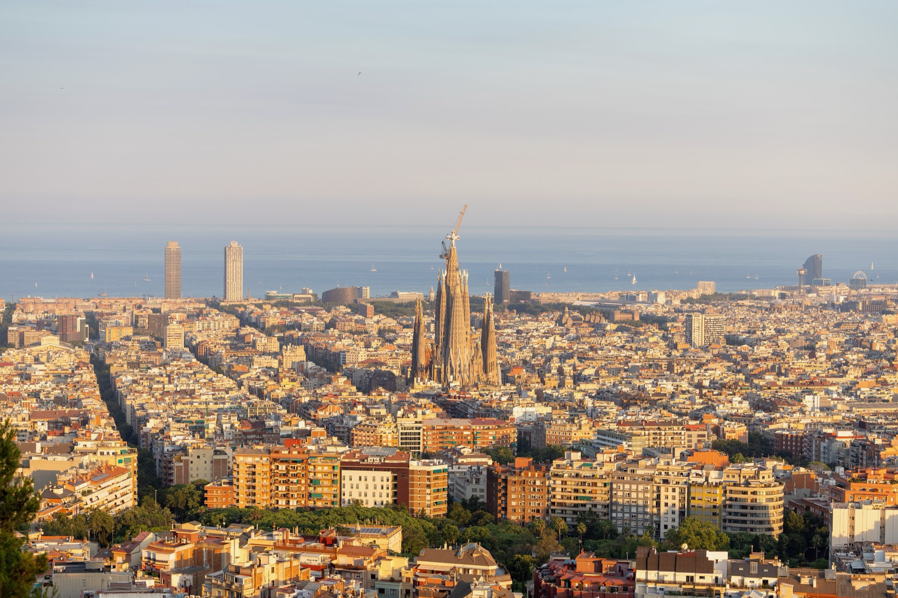
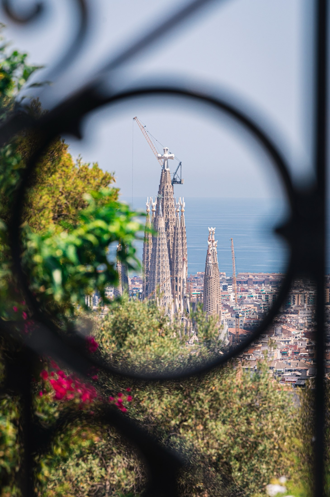
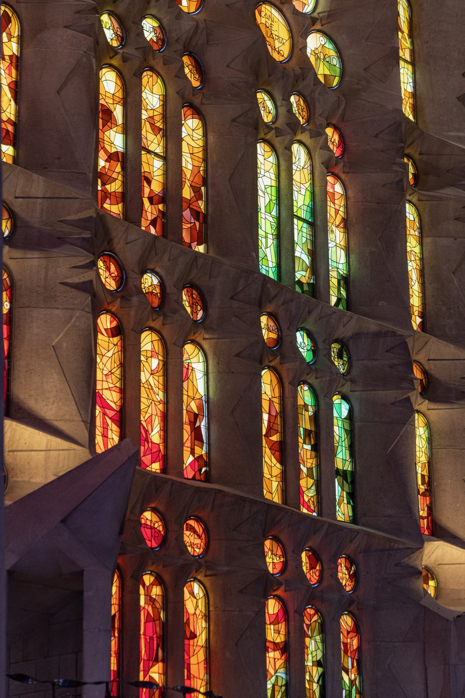
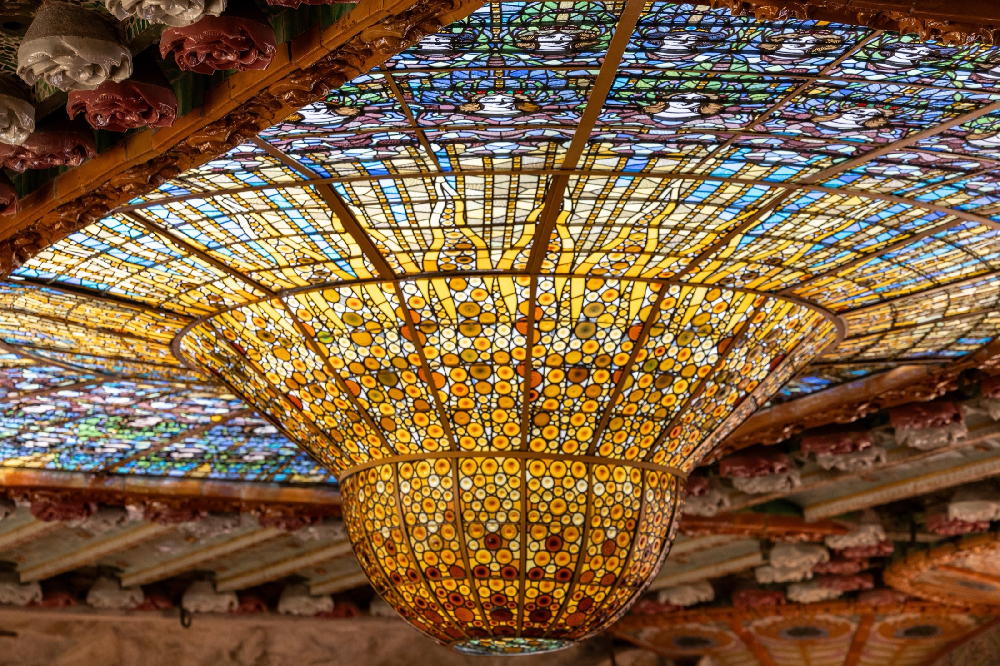
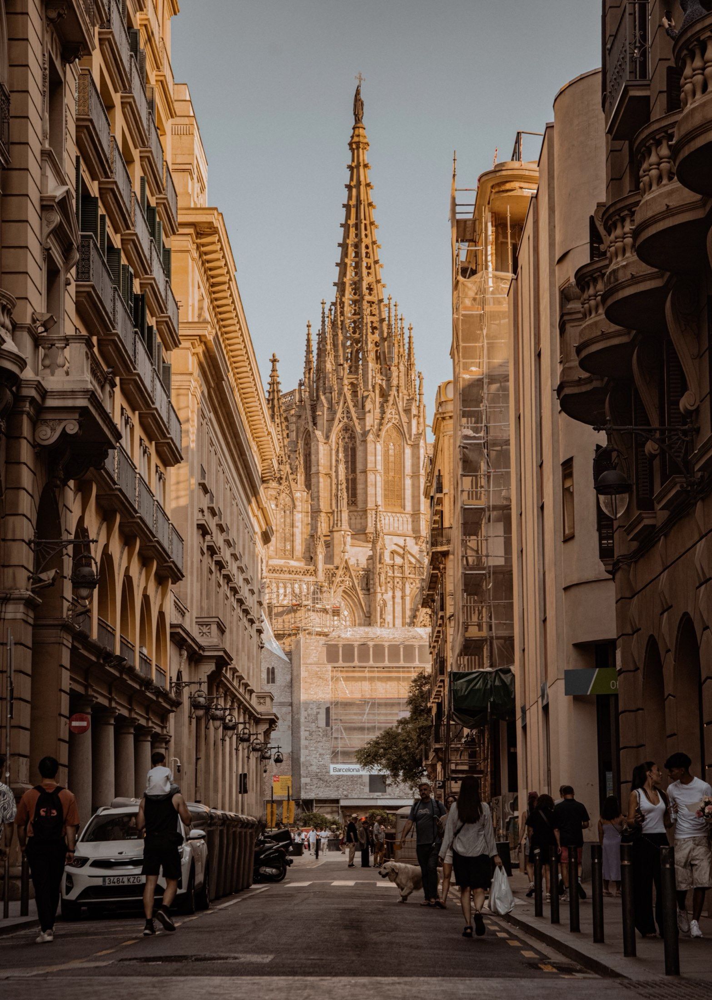

Barcelona
Barcelona in July means sunrise at 6:35 and sunset at 21:25 — two golden hours spaced so far apart you can fit an entire city between them. This is the exact route I walked, with the timing that worked and the mistakes already made for you.
Before you go
| Visa | Taiwan passport: visa-free in the Schengen area, up to 90 days in any 180. Nothing to apply for. |
| SIM / data | — |
| Best season | I went in July: two long golden hours a day, but hot and peak crowds. May–June or September buys you gentler heat and thinner queues for the same light. |
| Weather & light | July sunrise 6:35, sunset 21:25 — the two golden hours sit 15 hours apart, so plan a real break in the middle. |
| Plug | Type C / F, 230V 50Hz — the round two-pin. Taiwan chargers need an adapter. |
| Time difference | Taiwan −6 hours in summer. Jet lag works in your favour: you wake early enough for sunrise. |
Getting there & around
Barcelona is the rare big city where you genuinely don't need a car — but you do need the right travel card, and two of the viewpoints have transport quirks that will waste your evening if you don't know them.
| Route | How | Notes |
|---|---|---|
| Everyday city travel | Hola Barcelona card | Metro, bus, funicular and FGC on one card. Bought on trip.com; it paid for itself by day two. |
| Up to Montjuïc | Metro → Funicular → Telefèric | Skip the harbour cable car — pricey, long queue, and it only reaches mid-hill. |
| Up to Tibidabo | S1/S2 → funicular → bus 111 | Navigate to Peu del Funicular, not "Tibidabo". Avoid the first and last carriage — the platform is too short to get out. |
| Day trip to Andorra | Flixbus from Barcelona-Sants | 08:15 out, 17:45 back, about 3 hours each way. |
Where I stayed
The Central House Barcelona Gracia — all five nights, no moving. Gràcia is the right call for this itinerary: you're walking distance from Gaudí country, one bus from Park Güell and Bunkers del Carmel, and the neighbourhood still feels lived-in rather than staged for tourists. Coming back at 22:00 after a 21:25 sunset and finding dinner still being served is worth more than a sea view.
Photo spots
Eleven spots, ordered roughly as I'd shoot them. Every name links to the exact map pin.
| Spot | Best time | Notes | Map |
|---|---|---|---|
| Sagrada Família | ~15:00 | Book a ~13:00 entry and stay — the stained-glass light peaks around 3 pm. | Map ↗ |
| Bunkers del Carmel | Sunset · dawn | 360° city panorama. Best light at sunset or early morning; near Park Güell. | Map ↗ |
| L'Estel ferit (Barceloneta) | Sunrise 6:35 | The "wounded star" towers on the beach — go at sunrise, worth the 5:30 alarm. | Map ↗ |
| Arc de Triomf | Dusk | Warm brick glows at dusk; the promenade gives clean symmetrical frames. | Map ↗ |
| Pont del Bisbe | Morning | The Gothic quarter's lace bridge — shoot early before the lane fills. | Map ↗ |
| Cathedral of Barcelona | Daytime | Timeslot ticket (11:30 worked well); facade + cloister. | Map ↗ |
| La Pedrera – Casa Milà | 10:30 slot | The rooftop chimneys are the shot. Morning slot avoids the worst crowds. | Map ↗ |
| Casa Batlló | Exterior | Honest verdict: the facade from the street is enough — I skipped the ticket. | Map ↗ |
| "The World Begins With Every Kiss" mural | Anytime | Mosaic of a kiss made from thousands of tiny photos, near the Cathedral. | Map ↗ |
| Mirador de Colom | Daytime | Columbus column at the port — pairs with the old-harbour walk. | Map ↗ |
| Tibidabo · Sagrat Cor | Sunset 21:15 | Church-on-a-mountain above the whole city. Go up before sunset; enter the temple and climb first. | Map ↗ |


Dining spots
The full research list had 20+ places; these are the ones that earned their spot. ✓ = personally eaten.
| Place | Type | Price | Verdict | Map |
|---|---|---|---|---|
| El Glop ✓ | Paella | €30–40 | Best paella of the trip — a 2-person pan feeds 3; outdoor tables are photogenic. | Map ↗ |
| El Ñaño ✓ | Ecuadorian · Spanish | €15–25 | Hidden gem, low prices — seafood rice and the grilled meat platter. | Map ↗ |
| La Flauta | Tapas | €20–30 | No misses — order the cod, foie, and shrimp. | Map ↗ |
| Extra Bar | Tapas | €20–35 | Where locals go — foie brioche, spicy potatoes, scallops. | Map ↗ |
| La Tasqueta de Blai | Pintxos | €10–20 | Grab what looks good; they count your toothpicks at the end. | Map ↗ |
| Jon Cake | Basque cheesecake | €7–10 / slice | Molten Basque cheesecake — Brie and Classic are the ones. | Map ↗ |
| Churreria San Roman | Churros | €5 | Old-school: five churros + thick hot chocolate for €5. | Map ↗ |
| La Boqueria | Market | €5–15 | Market grazing; for jamón, buy the black-pig label at listed prices. | Map ↗ |
| 7 Portes | Paella (classic) | €46–66 | Century-old institution — Paella Parellada is the signature. | Map ↗ |
| La Paradeta Sants | Seafood | €25–40 | Pick your seafood by weight, they cook it — oysters are the move. | Map ↗ |
Activities
What I booked, what I skipped, and what it actually cost. Prices are what I paid in TWD — book the timed ones before you fly, they sell out.
| Activity | Price | Slot | Verdict |
|---|---|---|---|
| Sagrada Família + tower | NT$1,711 | 13:00 | Worth every cent. Book early afternoon and stay for the 3 pm light. |
| La Pedrera – Casa Milà | NT$823 | 10:30 | Go for the rooftop chimneys. Morning slot beats the crowds. |
| Park Güell | NT$736 | 13:30 | Timed entry — and ride one bus stop past, so you walk downhill. |
| Palau de la Música Catalana | NT$731 | 10:00 | The stained-glass skylight alone justifies the ticket. |
| Barcelona Cathedral | NT$695 | 11:30 | Facade, cloister and rooftop — quick but worth it. |
| Hola Barcelona travel card | via trip.com | — | Covers metro, funicular and FGC. Paid for itself by day two. |
| Activity | Cost | Notes |
|---|---|---|
| Montjuïc castle + Telefèric | On site | Cable car stops at 21:00 — for the 21:25 sunset, walk down to the funicular instead. |
| Magic Fountain of Montjuïc | Free | Summer Wed–Sun — check the schedule, it changes by season. |
| La Boqueria market | Free | Breakfast and jamón. Buy at listed prices and you won't get stung. |
| Recinte Modernista de Sant Pau | On site | Five minutes from Sagrada Família and far quieter. |
| Andorra day trip | Flixbus return | 08:15 out, 17:45 back. Download offline maps and bring some euros. |
What I skipped — and would skip again
Casa Batlló — the facade from the street is the shot; the interior ticket is steep. Montserrat — I had the NT$1,721 combo ticket researched, then chose Andorra instead. Montserrat needs a full day and deserves its own trip; don't squeeze it in.
My route
Day 01 · Eixample & Gaudí
Casa Milà, Sagrada light, Bunkers sunset
Casa Batlló facade from the street, La Pedrera at 10:30, then Sagrada Família on a 13:00 entry — stay inside until the 3 pm light. Recinte Modernista de Sant Pau after. Sunset from Bunkers del Carmel, then Arc de Triomf by night.
SUNSET 21:25 · BUNKERS DEL CARMELDay 02 · Sea to mountain
Sunrise at the beach, Gothic quarter, Montjuïc night
Sunrise at L'Estel ferit (6:35). Gothic quarter all morning: La Boqueria for breakfast, Palau de la Música at 10:00, Cathedral at 11:30, Pont del Bisbe, the kiss mural. Port and Mirador de Colom, then Montjuïc by funicular + cable car for the castle and the Mirador de l'Alcalde sunset. Finish at the Magic Fountain show (summer Wed–Sun — check the schedule).
SUNRISE 6:35 · L'ESTEL FERITDay 03 · Park Güell & Tibidabo
Mosaic mornings, a church above the clouds
Park Güell on a 13:30 timeslot (use the bus trick in the notes below), wander Gràcia, then the whole Tibidabo transport chain for sunset at Sagrat Cor — the city and the sea in one frame.
SUNSET 21:15 · TIBIDABODay 04 · Day trip
Andorra — or Montserrat
I took the Flixbus to Andorra (8:15 out, 17:45 back; download offline maps, bring some euros). The alternative I researched and skipped: Montserrat by R5 + rack railway, with the Sant Jeroni summit hike — next time.
FLIXBUS BCN-SANTS ↔ ANDORRA


Local tricks & practical notes
📍 Park Güell — the bus-stop trick
Don't get off at the Park Güell stop. Ride one more stop and walk back downhill to the entrance — the "correct" stop makes you climb a long uphill. A local taught me this; my legs are grateful.
📍 Tibidabo — navigation warning
Don't navigate to "Tibidabo" — navigate to Peu del Funicular station. On the S1/S2 train, avoid the first and last carriage or the short platform won't let you off. Then: Vallvidrera funicular (don't exit the station) → bus 111 to the top.
📍 Montjuïc — take the right cable car
There are two cable cars. Skip the Port one (expensive, long queue, only reaches mid-hill). Take metro → Funicular → Telefèric de Montjuïc to the castle. It stops at 21:00 — for the 21:25 sunset, stay at Mirador de l'Alcalde, then walk down to the Funicular (runs till 22:00) or catch bus 150.
Tickets & practical
- Book timeslots ahead (Klook worked for everything): Sagrada Família tower, La Pedrera, Palau de la Música, Cathedral.
- Hola Barcelona travel card covers metro, funicular and FGC — it paid for itself by day two.
- July light: sunrise 6:35, sunset ~21:25. Plan dinner reservations after sunset, not before.
- Casa Batlló: exterior only is a legitimate choice — spend the ticket money on paella.
- Base: The Central House Barcelona Gracia — walkable to Gaudí country.
About the photos
The images on this page are placeholders — the real photographs from this trip are being edited and will land here (and in the Gallery) soon.